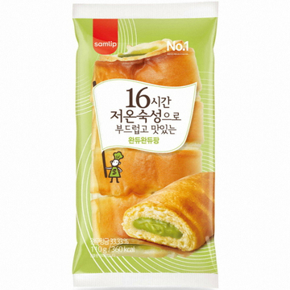

제가 좋아하는것은 크게 2가지로 나눌수 있습니다.
-
고양이
- 빵
- 고양이
자기소개를 보면 아시겠지만 저는 이미 고양이를 키우고있기도 한 애묘인입니다.물론 강아지도 귀엽지만 저에게 강아지vs고양이를 물어본다면
저는 고양이를 고를것입니다. 고양이가 애교가 없고 주인을 몰라본다는 인식이 있는데 아니라고 자신있게 말씀드릴 수 있습니다. 날이 풀린 요즘
고양이는 부모님이 출퇴근하는 시간을 기억해놓았다가 부모님이 퇴근하기 10분쯤 전부터 문 앞에서 기다리고 있습니다. 문을 열고 가족이 보이면
제일 먼저 달려가는게 고양이기도 하고요. 자다가 주변에 아무도 없으면 아무리 졸리더라고 일어나서 사람들을 찾아다니곤 한답니다.
- 빵

주로 무슨 빵을 많이 드시나요? 좋아하는 빵이 워낙 많아 편의점에서 판매하는 빵 중 가장 좋아하는 빵을 사진으로 골라보았습니다.
빵을 좋아하는 가장 큰 이유는 역시 맛있기 때문이 가장 큰거 같네요 어떤식으로 조리하느냐에 따라 달라지는 식감부터 하며 단맛 짠맛 매운맛
이 잘어울리기도 하니 계속해서 찾게되네요. 또 다른 이유는 먹기 간편해서입니다. 촉박하게 밥을 먹어야할때 샌드위치나 빵을 제외하고는 딱히 떠오르지 않네요.